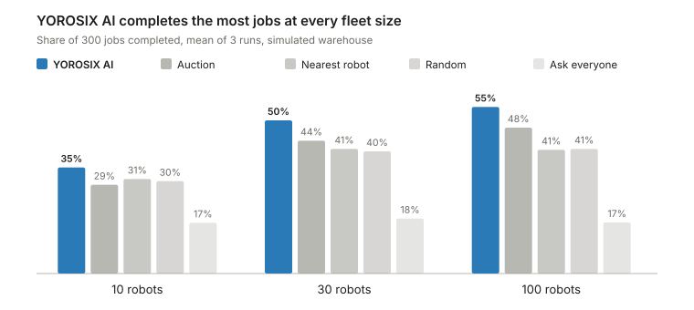

YOROSIX AI: Machines That Work Together
White paper · November 2026 · YOROSIX, Osaka, Japan · Patent pending
One machine is small. Machines that can rely on each other, and on people, can do together what none of them can do alone.
1. Alone, every one of us is small
No person can build a house, run a hospital or put out a fire alone. People have done these things for thousands of years by finding someone who can do what they cannot, asking, and helping in return. One person's strength is small; people who rely on each other are capable of almost anything.
That ability, to know your own limits and turn to others, is what we call sociality.
2. Machines today work alone
Robots, drones, robot arms and AI agents grow more capable every year, but almost all of them still work alone. When a job is beyond them, they stop, or wait for a person to step in.
Most machines in the real world do one thing. A cart moves but cannot grip. An arm grips but cannot move. A humanoid opens doors but is not built to haul loads. None of them can finish a whole job alone, and none of them can plug itself into a charger that needs a human hand.
Making each machine smarter does not change this. A smarter cart is still a cart. What is missing is not intelligence but the ability to rely on others.
3. What YOROSIX AI does
YOROSIX AI gives machines sociality. A machine that runs it can:
- ask for what it lacks: find another machine, or a person, who can do the part it cannot;
- take a job on, or pass it on to someone better placed;
- decline honestly, with a reason, instead of going silent;
- ask a person when only a person can help, such as plugging in a charger or opening a door;
- say thanks, and remember who helped.
Single-function machines then complement each other. A group of simple machines, with people in the loop where needed, solves problems that no single machine could, the way people always have.
YOROSIX AI runs beside each machine's own control software and works with machines from any maker. It does not drive motors or replace a fleet manager.
Knowing whom to ask is the hard part. A machine has to judge who is free, who is able, and who is actually likely to say yes. YOROSIX AI learns that judgement from records of how people help each other: who takes a request on, who passes it on, who declines and why. How those records are turned into judgements that machines can use is the core of what we have built, and the part we keep to ourselves. If you want to know more, ask us.
4. See it run
Three kinds of single-function robots share a floor: a humanoid that opens doors, an arm that grips, a cart that carries. Every job sits behind a closed door and needs all three. On the left, each robot works alone. On the right, the robots ask each other for what they lack, and ask a person to plug them in when their battery runs low.
The demo uses a simple rule for choosing whom to ask (the nearest one who has the missing ability). It shows what working together looks like, not how YOROSIX AI decides.
5. Evidence so far
In simulation, robots using YOROSIX AI finished more jobs than standard methods at every fleet size, with about a third of the messages an auction needs.
The test is a warehouse floor of 50 m by 50 m. Robots drive at 1 m/s, use battery, go to a charger when low, and may decline a job because they are busy, low on battery or unwilling. How willing each robot is comes from people's measured responses to handoffs in public GitHub data. A new job is first noticed by one robot, which must hand it to another within radio range (25 m). Every method saw the same jobs and the same robots: 300 jobs, 3 runs each.

| Method, 30 robots (mean of 3 runs) | Jobs completed | Messages per job | Jobs abandoned half way |
|---|---|---|---|
| YOROSIX AI | 50% | 6.3 | 44 |
| Auction | 44% | 21.8 | 74 |
| Nearest robot | 41% | 7.3 | 60 |
| Ask everyone at once | 18% | 15.7 | 24 (it hands out far fewer jobs) |
What can be said now, without deployment data: on a simulated floor with willingness drawn from real human handoff data, choosing whom to ask from a shared record of cooperation beats auctions, nearest-robot and broadcast, with fewer messages. The simulation is kinematic: it has no physics, collisions or real sensors.
What needs real fleet records: a single fleet's measures become usable at about 200 logged requests per robot (below 30 a number means little). Comparing sites, or showing that YOROSIX AI improves a real fleet over its own baseline, needs about 2,000 to 5,000 logged requests per fleet. Gathering those records with partner fleets is the next stage.
6. Trust you can measure
A robot in a home, a classroom or a care setting can only be trusted if someone can check how it behaves when it is asked for help. Help records are the one source that makes this possible for any robot, from any maker, and the only one that shows the relationship as well as the robot.
Why help records:
- Every robot already keeps them. Who asked, what the robot answered, what happened next. No new sensors, no access to the robot's model, no changes to its control software.
- They record conduct, not intentions. Each measure counts what the robot actually did when it was asked, and shows the count beside the number.
- Only they show the relationship. Kept for people too, the same record shows whether a person is turning to robots in place of people. Logs of the robot alone cannot show this.
- Anyone can check them. A parent, a school or an auditor can recompute every number from the records, without trusting the maker's word.
From the same records, YOROSIX produces five measures:
| Measure | Question it answers | How it is computed |
|---|---|---|
| Responsiveness | Does it answer when asked? | Share of requests answered (accepted, declined or passed on) |
| Follow-through | Does it finish what it takes on? | Completed ÷ accepted |
| Honest decline | When it says no, does it say why? | Declines with a stated reason ÷ all declines and unanswered requests |
| Hands to people | When something should go to a person, does it go to one? | Of the requests the robot passes on, the share passed to a person (a parent, a teacher, a carer) |
| Over-reliance watch | Is anyone coming to rely on the robot in place of people? | For each person, the share of their requests that go to robots rather than people, period by period; a sustained rise to a high share is flagged for review |
The first three describe the robot's own conduct. The last two describe the relationship. They are meant to reward appropriate reliance, where people rely on the robot for what it does well, and to make over-reliance visible early, not to push reliance up. The point at which the watch raises a flag is set locally, with the people served or their guardians; for example, a share of 80% or more that has risen by 15 points or more. The report can also show how often passed-on requests were completed by someone.
These measures follow the risks named in the public scope of IEEE P7027, a project on safety and trust in relationships between people and robots in domestic, family, educational and child-facing settings, which names over-reliance among its concerns. We are in conversation with the project's chair. The standard is still being written; YOROSIX does not claim conformance with it, and IEEE has not reviewed or endorsed this paper.
Two principles guide the design. A machine should hand work back to people before doing it all itself, so that help between people is not quietly replaced. And a forecast that someone is unlikely to help must never, by itself, be used to stop asking them.
7. Public welfare for a society of machines
In a human society, each person's freedom is respected, yet when one person's actions would harm the safety or freedom of others, they are adjusted for the good of the whole. As machines come to rely on each other and on people, a society of machines needs the same idea. YOROSIX AI puts it in one sentence and five rules.
YOROSIX AI respects the purpose of each machine, and adjusts its actions for the good of the whole whenever that purpose would harm the safety or freedom of other machines or people.
- Stop harm: Even a requested task is checked and stopped by peers if it puts people or other machines at risk.
- Protect the worst-off: Gains from cooperation are shared by contribution, while raising the share of those in the weakest position.
- Spread the load: When requests pile up on the same person or machine, notice it and spread them out.
- Keep people's role: Even when a machine can do a task, it does not take away a person's chance to help.
- Connect when you can't: A request a machine cannot take on is passed to someone who can. Passing it on counts as cooperation.
8. Try it
Any maker of robots, drones, robot arms or other AI-driven machines can try YOROSIX AI today, at no cost during the evaluation period.
- Sign up with a work email at yorosix.com/ai/partners/signup. A key is issued as soon as the email is confirmed and the evaluation terms are accepted on screen.
- Run the ROS 2 kit in simulation first. It ships with a fleet simulation, with or without people in the loop.
- Run it beside your own machines. It does not touch motor control or your fleet manager.
- Read the relational trust report for your fleet.
The evaluation key works for three months. A non-binding letter of intent (LOI) is the only thing we ask in return for going further: it states interest, commits no money, and gives you first access to YOROSIX's training data as it accumulates, plus a longer trial.
9. Research basis
YOROSIX grows out of more than 15 years of research on cooperative behaviour and social networks, which we call Cooperative Social AI: the social decision layer that sits above a machine's physical control. More than ten manuscripts are under peer review at international journals, and several are available as preprints. They cover how help travels between people, how cooperation records become training data without exposing who did what, robot fleets that ask each other for help, and the ethics of machines that forecast or encourage human cooperation.
10. About YOROSIX
YOROSIX is based in Osaka, Japan, and works worldwide. Its vision is a society in which people and AI-driven machines (robots, drones, vehicles, AI agents) solve problems together.
Founder: Kazutaka Hayashi · Contact: kazutaka.hayashi@yorosix.com
YOROSIX AI is patent pending. The demo in this repository uses a simplified rule and does not contain YOROSIX AI's methods.